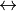
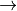

Changing Colorspaces¶
Goal¶
- In this tutorial, you will learn how to convert images from one color-space to another, like BGR  Gray, BGR HSV etc.
- In addition to that, we will create an application which extracts a colored object in a video
- You will learn following functions : :ocv:pyfunction:`cvtColor`, :ocv:pyfunction:`inRange` etc.
Changing Color-space¶
There are more than 150 color-space conversion methods are available in OpenCV. But we will look into only two which are most widely used ones, BGR Gray and BGR HSV.
For color conversion, we use the function cv2.cvtColor(input_image, flag) where flag determines the type of conversion.
For BGR  Gray conversion we use the flags cv2.COLOR_BGR2GRAY. Similarly for BGR HSV, we use the flag cv2.COLOR_BGR2HSV. To get other flags, just run following commands in your Python terminal :
>>> import cv2
>>> flags = [i for i in dir(cv2) if i.startswith('COLOR_')]
>>> print flags
Note
For HSV, Hue range is [0,179], Saturation range is [0,255] and Value range is [0,255]. Different softwares use different scales. So if you are comparing OpenCV values with them, you need to normalize these ranges.
Object Tracking¶
Now we know how to convert BGR image to HSV, we can use this to extract a colored object. In HSV, it is more easier to represent a color than RGB color-space. In our application, we will try to extract a blue colored object. So here is the method:
- Take each frame of the video
- Convert from BGR to HSV color-space
- We threshold the HSV image for a range of blue color
- Now extract the blue object alone, we can do whatever on that image we want.
Below is the code which are commented in detail :
import cv2
import numpy as np
cap = cv2.VideoCapture(0)
while(1):
# Take each frame
_, frame = cap.read()
# Convert BGR to HSV
hsv = cv2.cvtColor(frame, cv2.COLOR_BGR2HSV)
# define range of blue color in HSV
lower_blue = np.array([110,50,50])
upper_blue = np.array([130,255,255])
# Threshold the HSV image to get only blue colors
mask = cv2.inRange(hsv, lower_green, upper_green)
# Bitwise-AND mask and original image
res = cv2.bitwise_and(frame,frame, mask= mask)
cv2.imshow('frame',frame)
cv2.imshow('mask',mask)
cv2.imshow('res',res)
k = cv2.waitKey(5) & 0xFF
if k == 27:
break
cv2.destroyAllWindows()
Below image shows tracking of the blue object:

Note
There are some noises in the image. We will see how to remove them in later chapters.
Note
This is the simplest method in object tracking. Once you learn functions of contours, you can do plenty of things like find centroid of this object and use it to track the object, draw diagrams just by moving your hand in front of camera and many other funny stuffs.
How to find HSV values to track?¶
This is a common question found in stackoverflow.com. It is very simple and you can use the same function, cv2.cvtColor(). Instead of passing an image, you just pass the BGR values you want. For example, to find the HSV value of Green, try following commands in Python terminal:
>>> green = np.uint8([[[0,255,0 ]]])
>>> hsv_green = cv2.cvtColor(green,cv2.COLOR_BGR2HSV)
>>> print hsv_green
[[[ 60 255 255]]]
Now you take [H-10, 100,100] and [H+10, 255, 255] as lower bound and upper bound respectively. Apart from this method, you can use any image editing tools like GIMP or any online converters to find these values, but don’t forget to adjust the HSV ranges.
Additional Resources¶
Exercises¶
- Try to find a way to extract more than one colored objects, for eg, extract red, blue, green objects simultaneously and implement it.